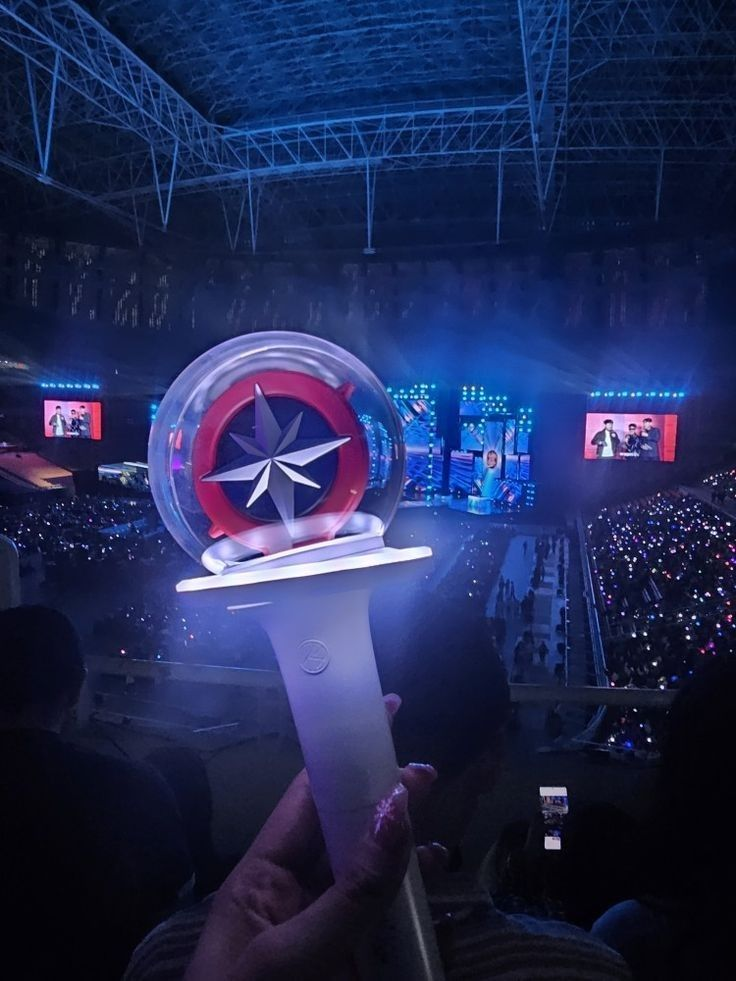

A bandáról

A Stray Kids egy dél-koreai fiúegyüttes, amelyet a JYP Entertainment hozott létre 2017-ben egy túlélő műsor keretében. A csapat hivatalosan 2018. március 25-én debütált az I Am Not című középlemezzel. A formáció nyolc tagból áll: Bang Chan, Lee Know, Changbin, Hyunjin, Han, Felix, Seungmin és I.N. Az eredeti kilenc tag közül Woojin 2019-ben távozott személyes okok miatt. A Stray Kids különlegessége, hogy zenéjük nagy részét saját maguk írják és producelik, különösen a 3RACHA nevű alcsapat tagjai (Bang Chan, Changbin, Han). Zenei stílusuk energikus és sokszínű, ötvözi a K-popot, hiphopot, EDM-et és rockot. Dalszövegeik gyakran foglalkoznak önazonossággal, mentális egészséggel és társadalmi nyomással.
 Rajongótáboruk neve STAY, amely a csapat iránti hűséget és kitartást szimbolizálja. A Stray Kids híres intenzív színpadi jelenlétéről, erőteljes koreográfiáiról és őszinte, mély mondanivalójú dalaikról. Nemzetközi szinten is sikeresek, több világturnén vettek részt, és zenéjük japán, angol verzióban is megjelenik.
A Stray Kids filozófiája az, hogy nem tökéletes idolok akarnak lenni, hanem olyan fiatalok, akik keresik az útjukat, hibáznak, tanulnak, és közben másokat is inspirálnak. Ez a hozzáállás sok rajongónak segít az önelfogadásban és a nehézségek leküzdésében.
A Stray Kids nemcsak a zenéjéről híres, hanem arról is, hogy tagjai rendkívül aktívan részt vesznek a kreatív folyamatokban. A csapat vezetője,Bang Chan például nemcsak énekel és rappel, hanem producerként is dolgozik. Ő gyakran mondja: “노력은 배신하지 않는다” (noryeogeun baesinhaji anhneunda) – „A kemény munka nem árul el.”
A csapat neve – Stray Kids – azt jelenti, hogy „elcsatangolt gyerekek”, akik nem a megszokott utat járják, hanem saját ösvényt keresnek. Ez tükröződik abban is, hogy dalaik gyakran szólnak az önkeresésről, a társadalmi nyomásról és a szabadságról.
A tagok közül Felix különösen ismert mély hangjáról, amit sok rajongó úgy jellemez, mint: “심장을 울리는 목소리” (simjangeul ullineun moksori) – „Szívbe markoló hang.”
A Stray Kids egyik különlegessége, hogy saját maguk készítik a legtöbb zenéjüket. A 3RACHA nevű alcsapat – Bang Chan, Changbin és Han – már a debütálás előtt is aktívan írt dalokat. Ez ritka a K-pop világában, ahol sok előadó külső szerzőktől kapja a zenét.
A rajongótábor neve STAY, ami abból a mondatból ered: “You make Stray Kids stay.” Ez azt jelenti, hogy a rajongók azok, akik miatt a csapat továbbra is létezik és alkot.
A tagok gyakran használnak koreai szlenget vagy aranyos kifejezéseket a videóikban. Például Hyunjin sokszor mondja: “귀엽지?” (gwiyeopji?) – „Ugye cuki vagyok?”